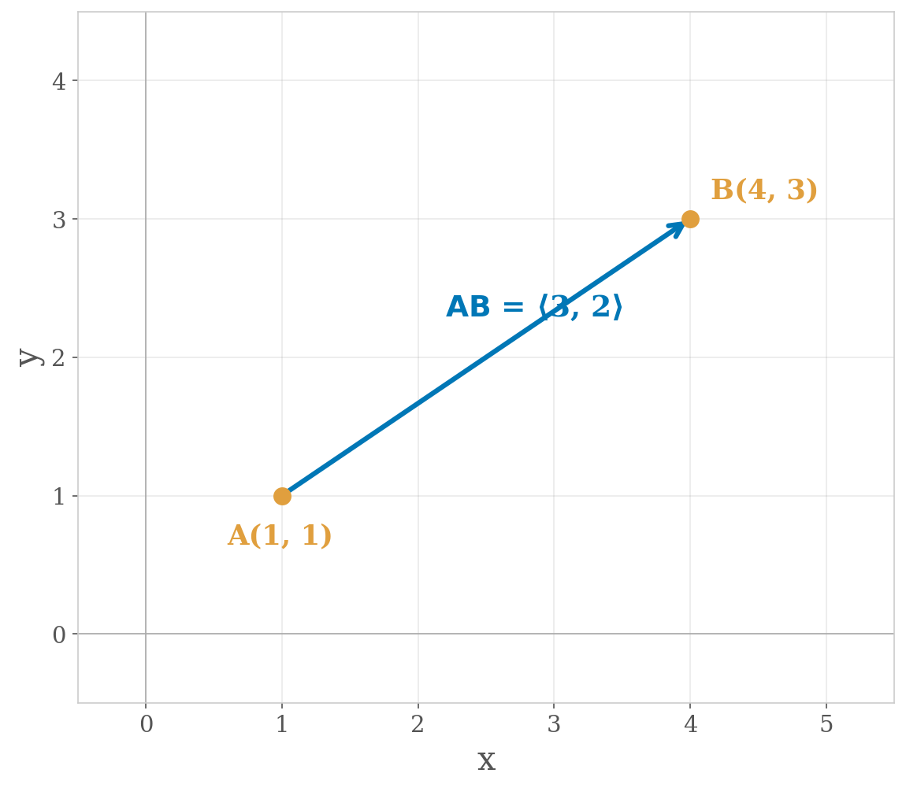
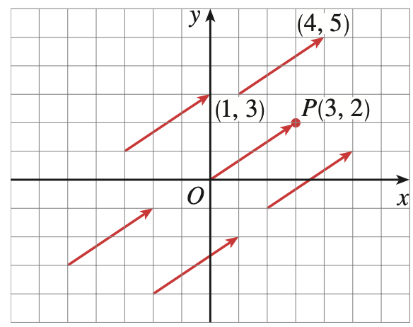
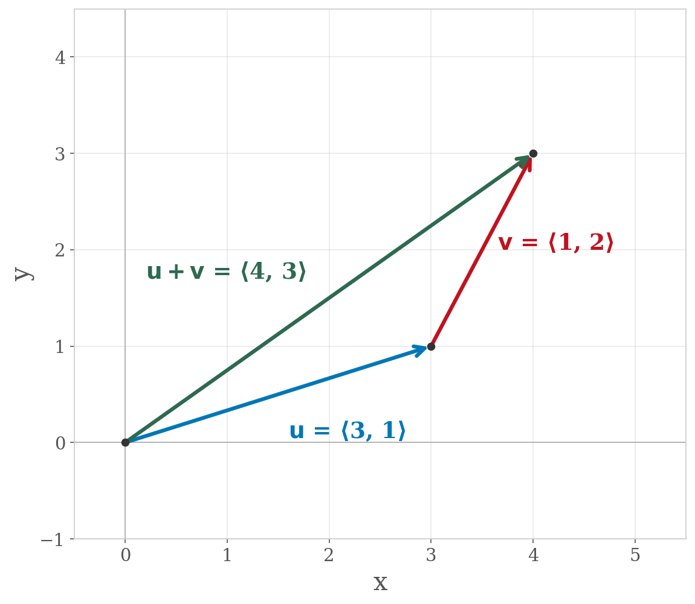
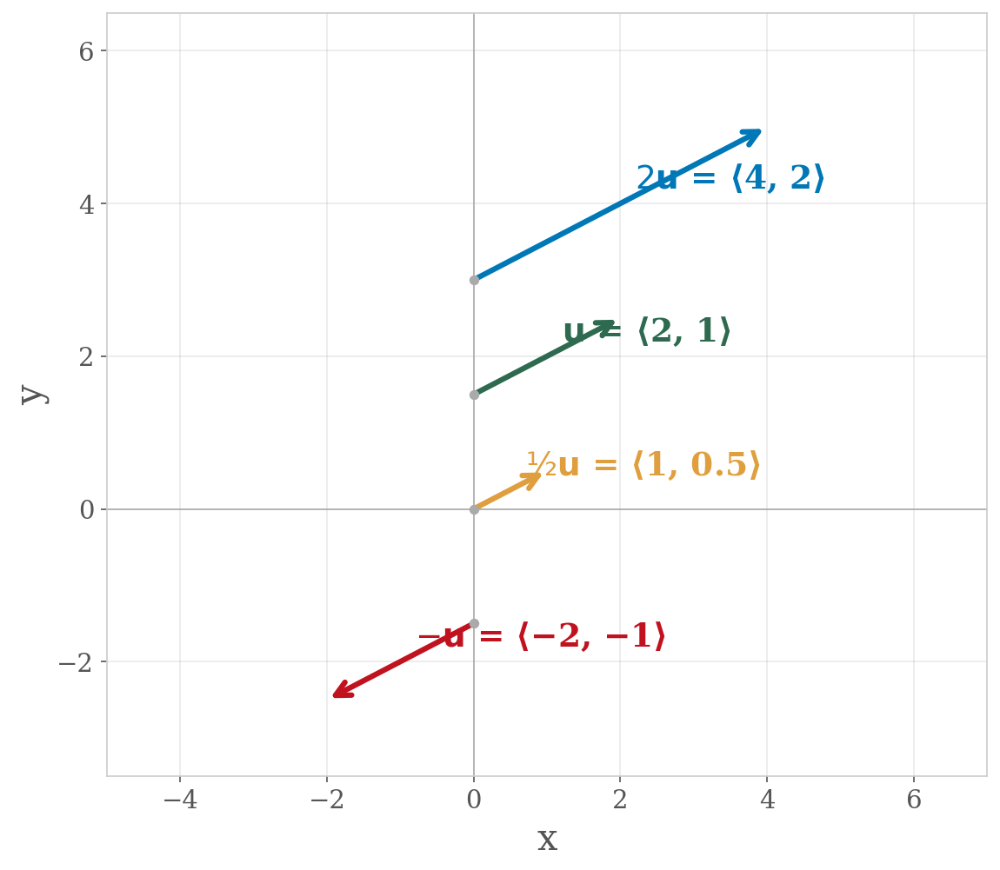
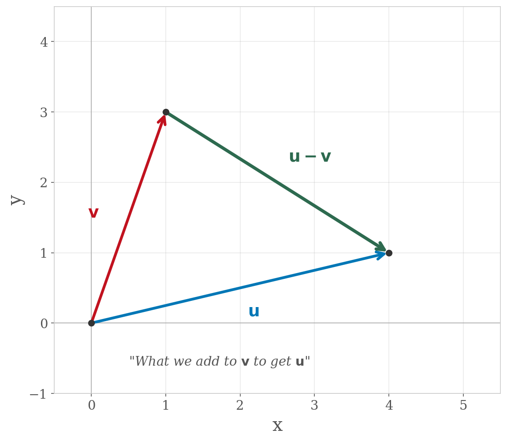
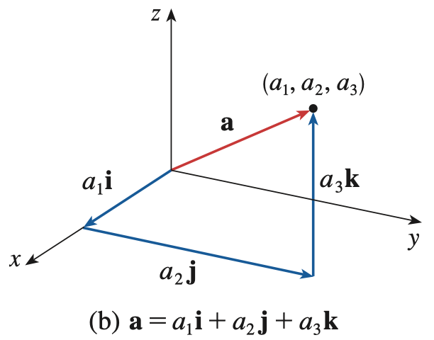

Section 12.2: Vectors
Vectors and the Geometry of Space
MTH 310
Calculus III
Scalars vs. Vectors
In Calculus I and II, every quantity was a number — a single value on the number line.
Now we need quantities that carry both size and direction.
| Scalars (magnitude only) | Vectors (magnitude AND direction) |
|---|---|
| Speed | Velocity |
| Distance | Displacement |
| Mass | Force |
| Length | Acceleration |
| Area | Weight (gravitational force) |
| Pressure | Work |
Displacement Vectors and Equal Vectors
A displacement vector \(\vec{AB}\) represents moving from point \(A\) (initial point) to point \(B\) (terminal point).
Equal Vectors
Two vectors are equal if they have the same magnitude and the same direction — even if they start at different points.
Equal vectors can be translated (slid) anywhere in space without changing the vector.


The zero vector \(\vec{0}\) has magnitude zero and no specific direction. It is the only vector with this property.
Vector Addition
Two ways to add vectors geometrically:
Triangle Law: Place the tail of \(\vec{v}\) at the tip of \(\vec{u}\). The sum \(\vec{u} + \vec{v}\) goes from the tail of \(\vec{u}\) to the tip of \(\vec{v}\).

Parallelogram Law: Place the tails of \(\vec{u}\) and \(\vec{v}\) together. Complete the parallelogram. The diagonal is \(\vec{u} + \vec{v}\).

Chaining displacements: \(\vec{AB} + \vec{BC} = \vec{AC}\)
Walk from \(A\) to \(B\), then from \(B\) to \(C\). The net displacement is \(A\) to \(C\).
Scalar Multiplication and Vector Difference
Scalar multiplication: \(c\vec{u}\) stretches or shrinks \(\vec{u}\) by a factor of \(|c|\).
- If \(c > 0\): same direction as \(\vec{u}\)
- If \(c < 0\): opposite direction
- If \(c = 0\): the zero vector
Parallel vectors: \(\vec{u}\) and \(\vec{v}\) are parallel if \(\vec{v} = c\vec{u}\) for some scalar \(c\).

Negative vector: \(-\vec{u} = (-1)\vec{u}\) — same magnitude, opposite direction.
Vector difference: \(\vec{u} - \vec{v} = \vec{u} + (-\vec{v})\)

Components
If we place a vector with its initial point at the origin, it becomes a position vector. Its components are just its terminal coordinates.
In 2D: \(\vec{a} = \langle a_1, a_2 \rangle\)
In 3D: \(\vec{a} = \langle a_1, a_2, a_3 \rangle\)
We use angle brackets \(\langle \cdot \rangle\) for vector components and parentheses \(( \cdot )\) for points.

Translating a vector to a different starting point gives an equal vector — same components, different location.
Displacement Vector Formula
Displacement Vector Formula
Given points \(A(x_1, y_1, z_1)\) and \(B(x_2, y_2, z_2)\), the displacement vector from \(A\) to \(B\) is:
\[\vec{AB} = \langle x_2 - x_1,\; y_2 - y_1,\; z_2 - z_1 \rangle\]
Terminal minus initial.
Example 1
Find the displacement vector \(\vec{AB}\) for \(A(2, -3, 4)\) and \(B(-2, 1, 1)\).
Magnitude
Magnitude of a Vector
The magnitude (or length) of a vector \(\vec{a} = \langle a_1, a_2, a_3 \rangle\) is:
\[|\vec{a}| = \sqrt{a_1^2 + a_2^2 + a_3^2}\]
In 2D: \(|\vec{a}| = \sqrt{a_1^2 + a_2^2}\)
This is the distance formula from Section 12.1! The magnitude of a position vector equals the distance from the origin to its terminal point.
Example: Vector Arithmetic
Example 2
For \(\vec{a} = \langle 2, -1, 3 \rangle\) and \(\vec{b} = \langle 0, 4, -3 \rangle\), compute:
- \(-3\vec{b}\)
- \(|-3\vec{b}|\)
- \(2\vec{a} + 5\vec{b}\)
Your Turn: Vector Arithmetic Practice
Example 3
Your turn! For \(\vec{u} = \langle 3, -1, 2 \rangle\) and \(\vec{v} = \langle -1, 4, 1 \rangle\), find:
- \(2\vec{u} - 3\vec{v}\)
- \(|2\vec{u} - 3\vec{v}|\)
Standard Basis Vectors
The standard basis vectors are unit vectors along each axis:
\[\vec{i} = \langle 1, 0, 0 \rangle, \quad \vec{j} = \langle 0, 1, 0 \rangle, \quad \vec{k} = \langle 0, 0, 1 \rangle\]
In 2D: \(\vec{i} = \langle 1, 0 \rangle\), \(\vec{j} = \langle 0, 1 \rangle\)
Any vector can be written as a combination of basis vectors:
\[\vec{a} = \langle a_1, a_2, a_3 \rangle = a_1\vec{i} + a_2\vec{j} + a_3\vec{k}\]



Example: \(\langle 3, 4 \rangle = 3\langle 1, 0 \rangle + 4\langle 0, 1 \rangle = 3\vec{i} + 4\vec{j}\)
Unit Vectors
Unit Vector
A unit vector is a vector with magnitude 1.
To find the unit vector in the direction of \(\vec{a}\):
\[\hat{a} = \frac{\vec{a}}{|\vec{a}|}\]
This process is called normalizing the vector.
Example 4
Find the unit vector in the direction of \(\vec{a} = \langle 3, 4 \rangle\).
Application: Forces in Equilibrium
Example 5
A 100-lb weight hangs from two wires as shown. Find the tensions \(\vec{T}_1\) and \(\vec{T}_2\) in the wires and the magnitudes of these tensions.

Setting up the problem:
The system is in equilibrium, so the forces sum to zero:
\[\vec{T}_1 + \vec{T}_2 + \vec{w} = \vec{0}\]
Write each force in component form:
- \(\vec{T}_1 = \langle -t_1 \cos 50{^\circ},\; t_1 \sin 50{^\circ} \rangle\) \quad (pulls up-left)
- \(\vec{T}_2 = \langle t_2 \cos 32{^\circ},\; t_2 \sin 32{^\circ} \rangle\) \quad (pulls up-right)
- \(\vec{w} = \langle 0, -100 \rangle\) \quad (gravity, straight down)
Solving the system:
Setting the \(x\)-components equal to zero:
\[-t_1 \cos 50{^\circ} + t_2 \cos 32{^\circ} = 0\]
Setting the \(y\)-components equal to zero:
\[t_1 \sin 50{^\circ} + t_2 \sin 32{^\circ} - 100 = 0\]
From the \(x\)-equation:
\[t_1 = \frac{t_2 \cos 32{^\circ}}{\cos 50{^\circ}}\]
Substitute into the \(y\)-equation:
\[\frac{t_2 \cos 32{^\circ}}{\cos 50{^\circ}} \sin 50{^\circ} + t_2 \sin 32{^\circ} = 100\]
\[t_2(\cos 32{^\circ} \tan 50{^\circ} + \sin 32{^\circ}) = 100\]
\[t_2 = \frac{100}{\cos 32{^\circ} \tan 50{^\circ} + \sin 32{^\circ}} \approx 66.07 \text{ lb}\]
\[t_1 = \frac{66.07 \cos 32{^\circ}}{\cos 50{^\circ}} \approx 85.64 \text{ lb}\]